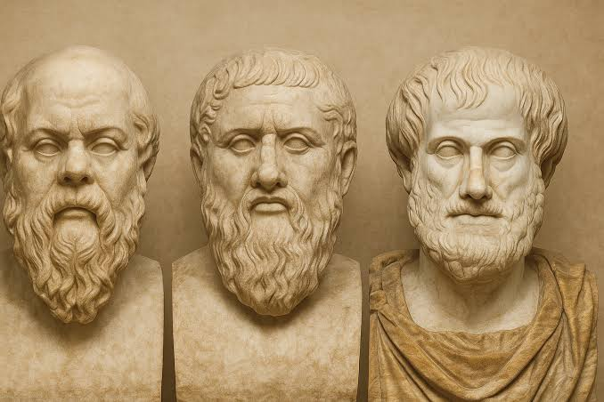

Texto
A lo largo de la historia, la filosofía ha sido desarrollada por grandes pensadores que han influido en la forma en que entendemos el mundo hoy.
🔹 Sócrates
Fue un filósofo griego considerado el padre de la filosofía moral. No dejó escritos, pero sus ideas se conocen gracias a su discípulo Platón. Su método de enseñanza era la mayéutica, que consiste en hacer preguntas para que las personas descubran la verdad por sí mismas.
🔹 Platón
Discípulo de Sócrates. Fundó la Academia de Atenas, una de las primeras instituciones educativas del mundo occidental. Escribió obras importantes como “La República”, donde analiza la justicia, la política y el Estado ideal.
🔹 Aristóteles
Fue discípulo de Platón y maestro de Alejandro Magno. Aportó en muchas áreas como la lógica, la ética, la biología y la política. Su forma de pensar fue más basada en la observación y la experiencia.
Estos filósofos son fundamentales porque establecieron las bases del pensamiento filosófico occidental.
